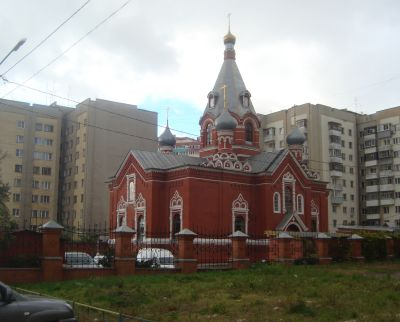

Достопримечательности Липецка


Никольский храм (Липецк)
Никольский храм — небольшой храм на Торговой площади, 16а, в Советском округе города Липецка.
Здание в русском стиле было возведено по проекту архитектора И. П. Машкова в 1890 году. Церковь освятили во имя Николая Чудотворца. Она примыкала к Тюремному замку (после революции его снесли). Храм имел довольно мощную звонницу, а самый большой колокол весил 7 тонн.
Официально был закрыт в 1918 году, но фактически существовал и после февраля 1922 года — тогда произошло изъятие серебряной утвари весом 2 фунта 5 золотников 44 доли на сумму 480 тыс. рублей. После национализации здание использовалось тюрьмой. За советские годы оно пришло в плачевное состояние, фактически в руины.
В 1991 году оно возвращено верующим. Восстановление началось в 1994 году. За долгие годы рядом построили двухэтажное административное здание, где разместились воскресная школа, библиотека, просфорная.
Изображения:


Никольский храм на карте: